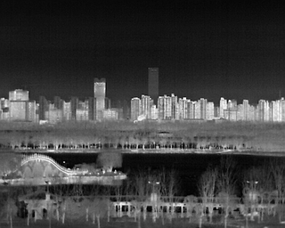
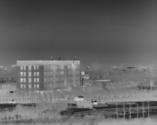
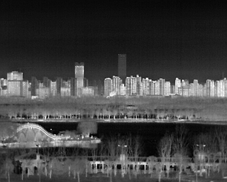
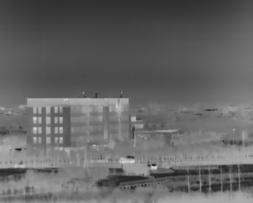
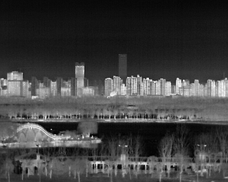
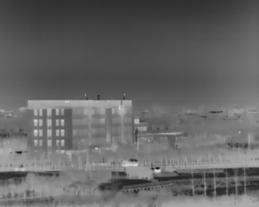

Paper: Download PDF
This repository provides two key products:
The LGC Dataset is captured by IRay Tech's LGC6122 uncooled LWIR infrared core. It features a 72 mm focal length enabling detection up to 1.3 km (humans) and 1.7 km (vehicles). For detailed info, see the Chinese manual "LGC6122非制冷红外机芯组件产品说明书".


Baidu Cloud: Link (pwd: wy3f)
Google Drive: Link
This is a self-supervised infrared image enhancement method based on an atmospheric scattering model. It performs well across public datasets and requires only hundreds of training images. It is also lightweight and hardware-deployable.
Download the data folder:
Run:
python test.py --name=LGC_std --Dataset=LGCOrganize your dataset:
./data/train_data/datasetname./data/test_data/datasetname./data/check_data/datasetnameTrain:
python train.py --name="your_experiment_name" --Dataset="datasetname"Test:
python test.py --name="your_experiment_name" --Dataset="datasetname"If you encounter any issues, feel free to contact me at andy_lly@163.com